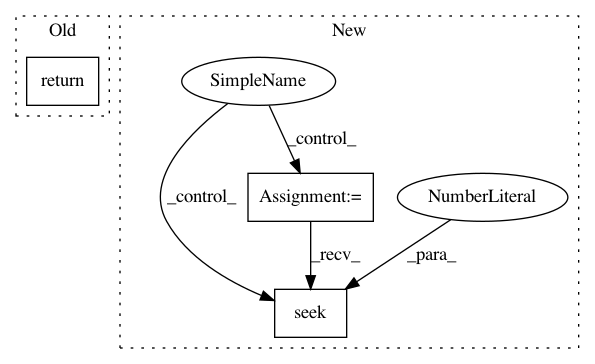

189819853d6c8afcff68df77b60a4f5f89527036,theanolm/iterators/linearbatchiterator.py,LinearBatchIterator,_readline,#LinearBatchIterator#,49
Before Change
Reads the next input line.
return self.input_file.readline()
After Change
result = self._input_file.readline()
while not result:
try:
self._input_file = next(self._input_file_iter)
except StopIteration:
return ""
self._input_file.seek(0)
result = self._input_file.readline()
return result
In pattern: SUPERPATTERN
Frequency: 3
Non-data size: 3
Instances
Project Name: senarvi/theanolm
Commit Name: 189819853d6c8afcff68df77b60a4f5f89527036
Time: 2016-11-14
Author: seppo.git@marjaniemi.com
File Name: theanolm/iterators/linearbatchiterator.py
Class Name: LinearBatchIterator
Method Name: _readline
Project Name: recipy/recipy
Commit Name: 27aebd9429cd624a0dada25b9685ffc7af444919
Time: 2016-09-22
Author: michaelj@epcc.ed.ac.uk
File Name: integration_test/process.py
Class Name:
Method Name: execute_and_capture
Project Name: mathics/Mathics
Commit Name: 8bc488e5cdb7a5164d6f911b23258b9c9135760c
Time: 2016-09-21
Author: Bernhard.Liebl@gmx.org
File Name: mathics/builtin/xmlformat.py
Class Name: XMLGetString
Method Name: _parse